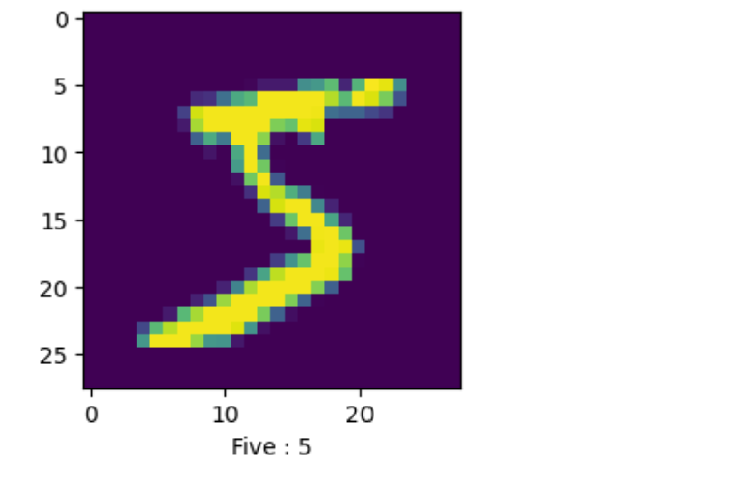
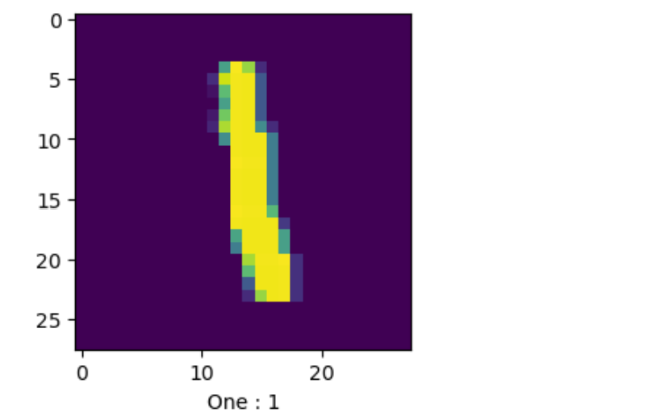
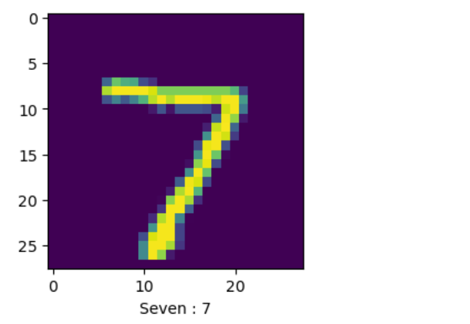
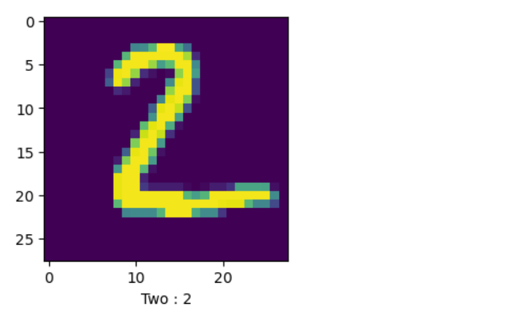
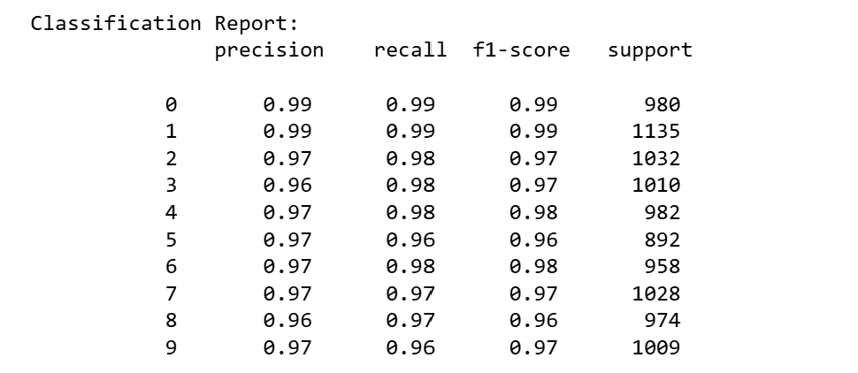

Information
Algorithms Used :
1. Convolutional Neural Network ( CNN ) :
CNNs are ideal for the MNIST dataset because they effectively capture spatial hierarchies in the 28x28 grayscale images of handwritten digits. Convolutional layers automatically learn essential features like edges and shapes, critical for distinguishing between digits. Pooling layers reduce dimensionality, improving computational efficiency while retaining important information. CNNs also benefit from techniques like dropout, which prevent overfitting and enhance generalization to new data. Their architecture makes CNNs highly accurate and efficient for the MNIST digit classification task, serving as a benchmark model for understanding and applying deep learning in image recognition.



6. Final Accuracy Table :
